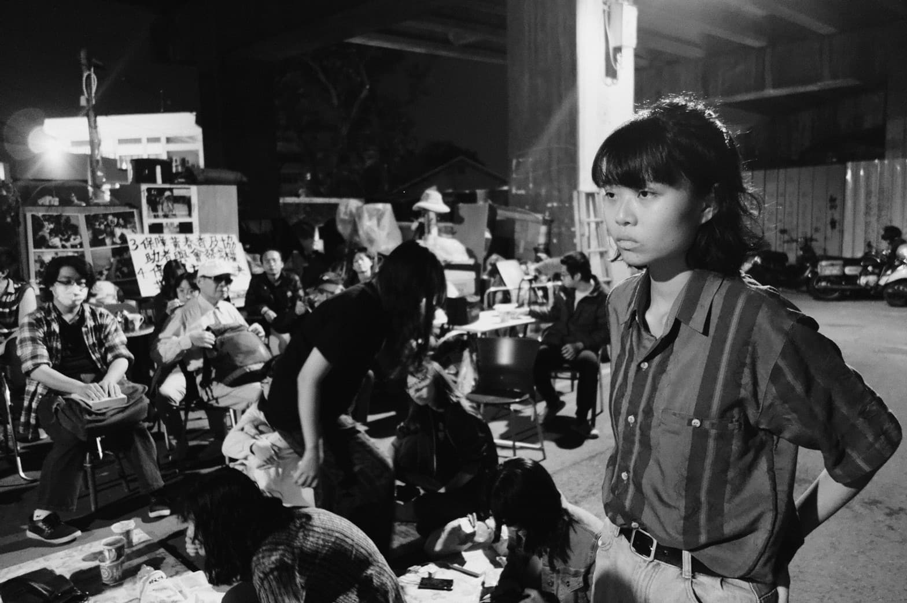
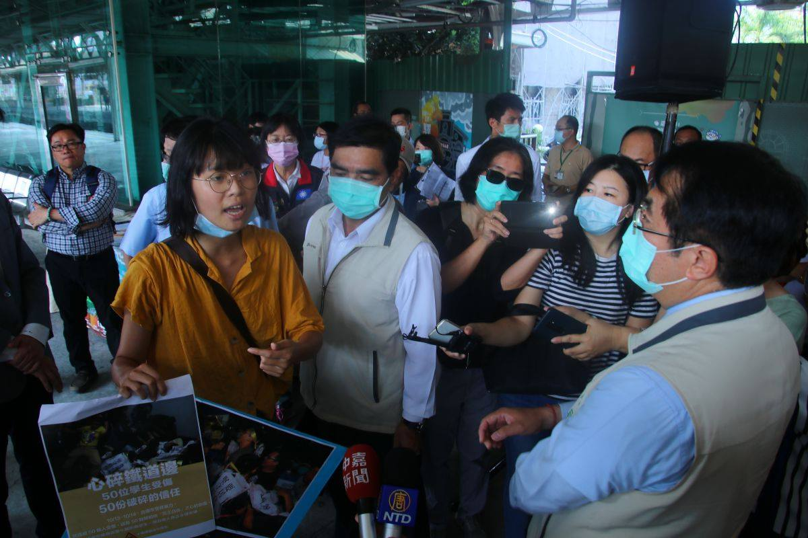
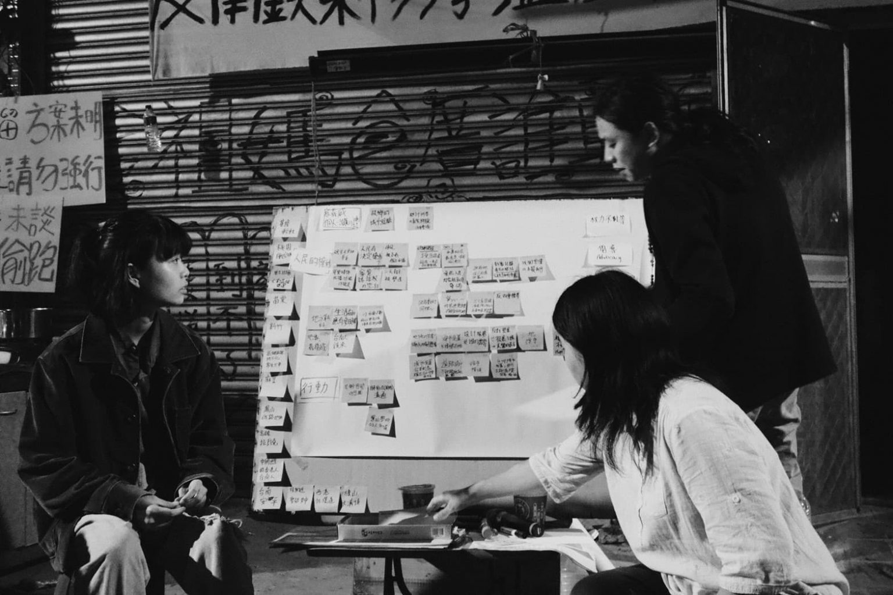

【記者吳冠伶台南報導】10月13日，鐵道局工人打碎黃春香家的玻璃，霹靂小組衝進屋內將聲援學生一一拖走。衝突延續至隔日一早，蔡亞涵坐在地上，崩潰哭了。
「好像全世界都站在我的對立面，而我沒辦法保護我想保護的。」手上還留著抗爭時遭鐵板夾傷的疤痕，蔡亞涵回想起擋拆的日子仍心有餘悸。目前就讀國立成功大學歷史學系的他，是成大異議性社團「零貳社」社長，也是聲援南鐵東移案被拆遷戶的學生之一。鐵道局強拆當日，前來支援的成大學生，不少是因蔡亞涵的號召而來。
台南市為實施鐵路地下化工程，規劃拆遷鐵道沿線300多戶樓房，黃春香家就是其中之一。經歷多年的抗爭與協商，眼看緩拆期限將至，黃家於9月20日舉辦「不中斷的居所——黃春香家團結抗爭晚會」，盼凝聚眾人力量反對迫遷。長期關注土地正義議題的蔡亞涵參與晚會後，發文呼籲大學生關注黃家的處境，並獲得大量轉貼。而後，他陸續帶領數十位學生前往黃家，縝密的學生人際網絡，加上社群媒體的串聯，迅速累積了龐大的抗爭能量。

南鐵被拆遷戶黃春香家距離成功大學校區僅不到一公里，鐵道局強拆黃家當天，數十名成大學生投入擋拆行動。 圖／陳謙睿提供
強拆前一日，學生們緊急動員人力守夜。當天，數十人死守屋內以肉身擋拆、與手持盾牌的警方發生嚴重推擠。身陷衝撞之中的蔡亞涵一度遭警方抬離現場，然而他坦言當下其實很冷靜，一心只想著達成行動訴求，「我在想，現在把我抬走的是女警，所以我不會被拖到黑暗的地方打。」
和警方周旋時，他想方設法趕緊回到隊伍。「我知道有好幾個人身心狀況很差，我很怕他們會爆掉。」也不顧自己身上的傷，蔡亞涵輕柔地安撫一旁焦慮的夥伴，「沒事、沒事⋯⋯」對他而言，此時此刻最需要擔心不是自己，而是他脫隊後頓失所依的隊友。
以行動關懷社會 家庭養成仗義執言性格
在社運場合展現成熟風範的蔡亞涵，成長過程中，其實早已習慣批判社會體制。從小，擔任國小社會科教師的母親，便常利用生活周遭的人事物進行機會教育，「看到我家附近有開發案，他就會跟我講這裡是順向坡，不能這樣挖。」談起家中這位「進步中年」，蔡亞涵開玩笑地說：「我媽媽個性很機車、很反骨，路見不平就會開始一直譙。」久而久之，母親天不怕、地不怕的作風也影響蔡亞涵，塑造他敢衝敢言、關懷社會的性格。
就讀臺北市立第一女子高級中學時期，他因不滿學校要求學生穿裙子進出校門，決定加入服儀改革倡議組織「北一短褲自由陣線」，成為總召後更成功影響校方修改校規。此外參與「綠覺醒」等學生組織的經驗，也讓蔡亞涵關注更廣泛的公共議題。

10月14日，台南市長黃偉哲在臉書貼文指「心碎平交道」造成千人死傷，引發輿論批評，蔡亞涵於隔日前往台南火車站向黃偉哲突襲抗議。 圖／蔡亞涵提供
淚崩形象遭抨擊 反思抗爭者社會期待
不過，總是帶頭衝的蔡亞涵，在南鐵抗爭行動中也曾流露出柔弱的另一面。
衝突爆發前幾日，他被鐵道局隨時可能前來拆屋的焦慮侵襲，白天拖著耗弱的身心遊走在學校與黃家之間，夜夜夢見可怕的怪手，蔡亞涵積累已久的壓力終究爆發。擋拆行動第二日，他目睹自己的夥伴受傷後，跪坐在地放聲哭泣。「就覺得，為什麼不是我在承受這些東西？」時隔近兩個月，他仍難過地責怪自己沒有保護好同伴。
而此畫面被《報導者》記者林雨佑意外捕捉，竟為蔡亞涵招致一連串人身攻擊。砲火朝著他哭泣、吸菸、刺青的形象猛烈抨擊，一則則惡意留言彷彿夢裡侵擾著他的怪手，朝他的身體開挖，最後貼上一紙「愛哭的壞女孩」標籤。蔡亞涵雖坦然承受這些輿論壓力，然而，一向勇於衝撞體制、從不畏懼「不一樣」的他，同時也自我質疑著：「為什麼我們一定要展演出大眾可以接受的樣子，才有資格成為抗爭者、女性、或一個被認同的訴說者？」
當社會要求他穿上裙子，扮演一個好女孩的角色，他選擇抵抗；當社會以公益之名，迫使人民搬離一輩子的住所，他選擇與弱勢並肩抵抗；當社會嘲笑他以抗爭身分自居，卻展現出弱者的樣貌時，他不抵抗了。他選擇反問社會：
「當我願意承認自己的脆弱，承認我們的弱小、無助，但我還是願意站在這裡，這件事情難道不堅強嗎？」
這次，蔡亞涵誠實地披露自我，推翻世界對社運工作者應當剛強的想像，繼續以行動實踐自己的信仰——軟弱也可以是一種力量。

黃春香家關注組於黃家周圍舉辦倡議活動，盼使更多民眾了解南鐵迫遷議題。 圖／陳謙睿提供

吳冠伶
千禧年生於打狗，貓空寄居中，政大新聞系三年級。喜歡打狗大於貓空，喜歡貓貓狗狗，但貓貓大於狗狗。